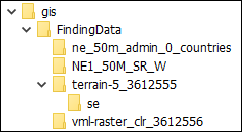
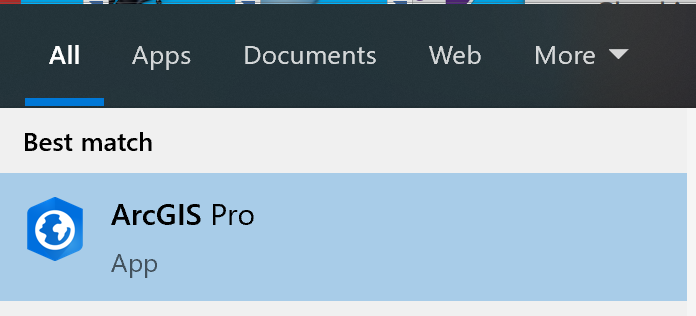
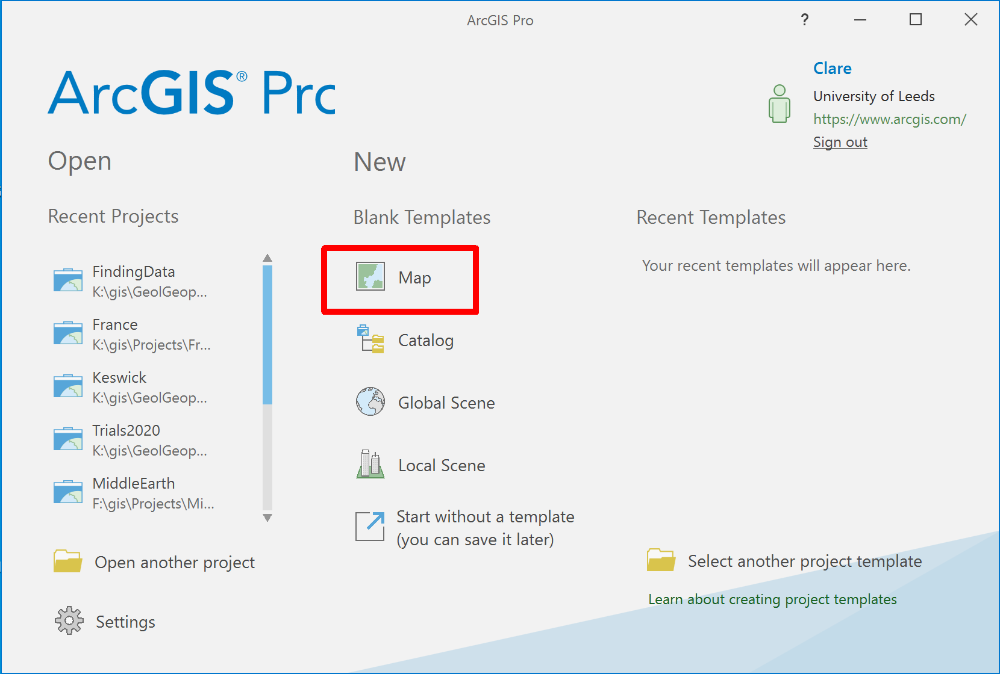
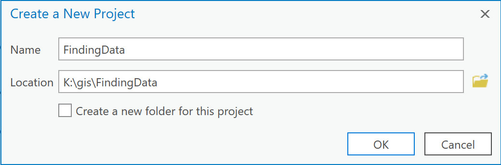

Data for GIS: Adding data to ArcGIS
The background to data for GIS will be covered in the lecture segment at the beginning of the class, and the presentation and any other supporting materials will be available in Minerva. The lecture segment should help you to understand why you are doing these exercises. If you still aren’t sure, please ask Clare.
Learning outcomes
When you have completed this section of the workbook you should be able to
- describe the main types of data used in GIS
- demonstrate different ways to add data to ArcGIS Pro
- find out essential information about the data and apply that to your use of the data in ArcGIS
Obtaining the data
If you have followed the sections on Digimap and Natural Earth data in the previous chapter you should have downloaded and kept examples of the following data
- Digimap
- VectorMap Local Raster
- OS Terrain 5 Contours
- Natural Earth
- Countries
- Shaded relief and water
If you haven’t downloaded those, or have but can’t find them, then please return to the instructions and download them now then come back here.
You will also need to download the data for this section from Minerva.
- Create a new folder called
FindingDatain thegisfolder on your disk - Copy or save all of the data you have downloaded into this folder
Unzipall of the zip files, again, into this folder.
You should end up with a folder structure something like the image below.

Starting a new map project
In the previous chapter you used an ArcGIS project that I had set up for you. This time you need to set up your own project from scratch.
- Open ArcGIS Pro by going to the Start Menu and search for it.
- Make sure that you have ArcGIS Pro, not any other version of Arc or ArcGIS and open that program

- When the ArcGIS Pro splash screen opens select to open
New > Blank Templates > Map

You’ll get a form to fill in with the project details.
- for
Namefill inFindingData- the same as the folder you’ve just put your data in - for
Locationbrowse to theFindingDatafolder, enter it, then clickOK - Untick the box next to
Create a new folder for this project - Click
OK

Doing it this way ensures that you are keeping your data in the project folder, which will help you to find it later.
ArcGIS should open a new map with a view of the World. You should see several new files and folders appear in the folder in which you have created the project, for example, FindingData.gdb; ImportLog; FindingData.aprx.
Checking data properties
The natural inclination once you have the datasets for your project is to add them straight in to a project in ArcGIS.